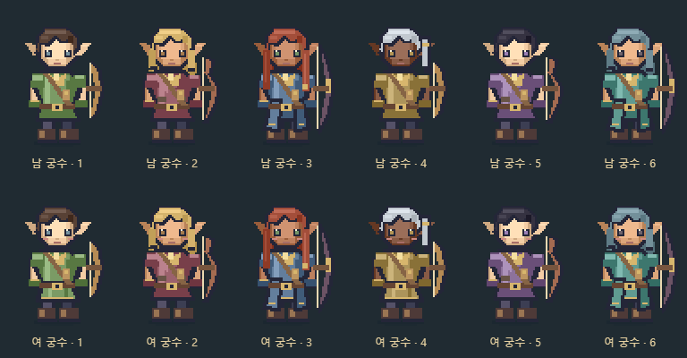
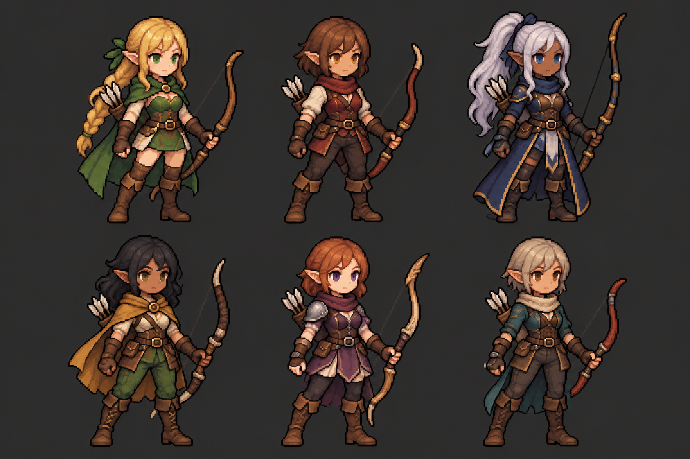
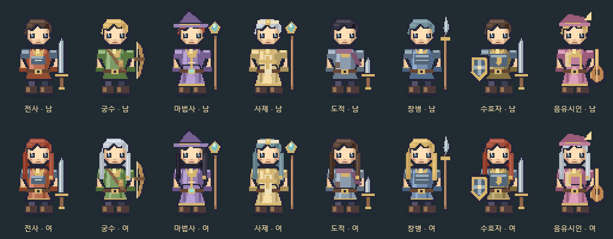
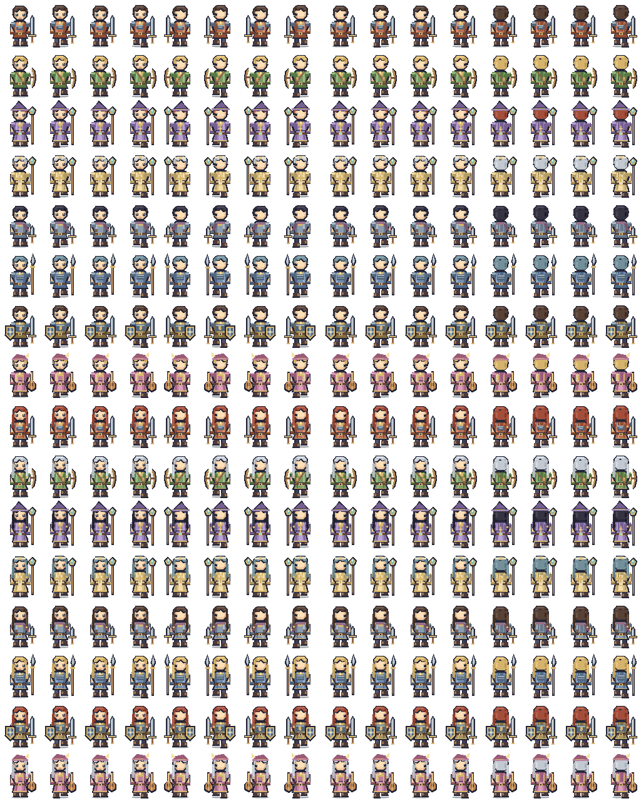
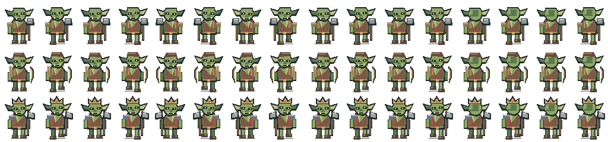
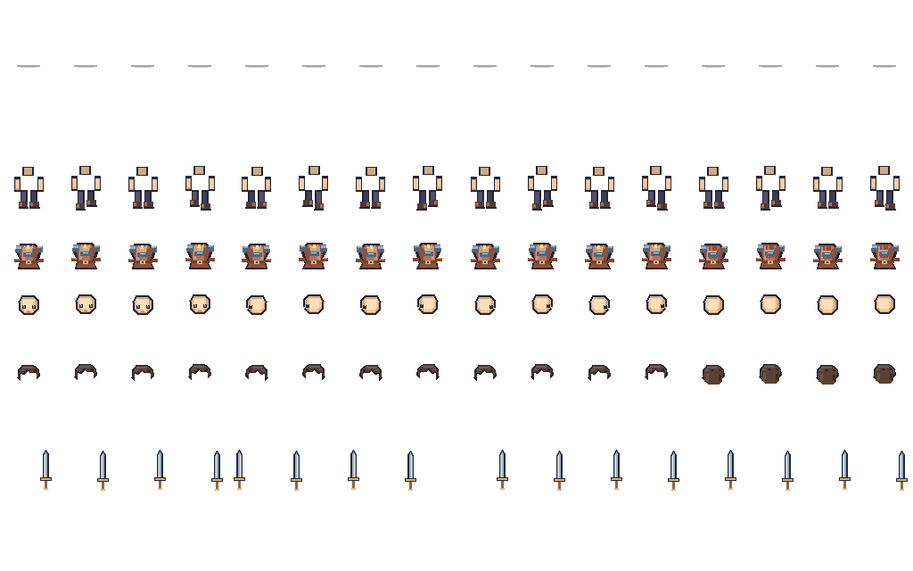
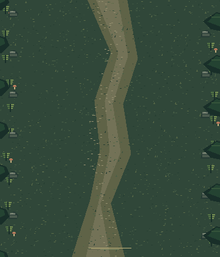

← 게임으로도트 에셋 도감 · Mosslight v2
외부 이미지 모델 없이 코드로 직접 제작한 원본 픽셀 그래픽입니다. 남녀 8직업, 4방향과 걷기 4프레임을 제공합니다.
→ 실제 게임에 적용한 생성 에셋 팩 보기 (52프레임)
랜덤 조합 — 현재 게임 적용

피부·눈·머리·옷 색, 복장과 활 형태를 조합한 실제 런타임 도트입니다. 신규 모집 인물은 시드에 따라 조합되며 저장 후 유지됩니다.
승인 그림체의 베리에이션 시안

같은 직업에서 피부·눈·머리·복장·활의 차이를 보여주는 이미지 생성 시안입니다. 아직 64×80 게임 스프라이트로 연결하지 않았습니다.
직업별 남녀 의상

위: 남성 / 아래: 여성. 전사·궁수·마법사·사제·도적·창병·수호자·음유시인 순서.
캐릭터 원본 시트
원본 64×80. 가로 스크롤로 전체를 확인하세요. 16열은 정면·왼쪽·오른쪽·뒷모습 각 걷기 4프레임입니다.

고블린 3종

레이어 분리 기준

남성 전사 샘플이므로 뒷머리·방패 레이어는 비어 있습니다. 실제 외형과 직업에 따라 합성합니다.
숲 공터

프레임·피벗·샘플 외형 메타데이터 · 에셋 리플레이스 지시서
캐릭터 시트는 기본 외형 참조본입니다. 게임은 저장된 피부색·헤어·종족·체형을 유지하며 같은 소스로 즉시 합성합니다. 걷기 외 공격·피격·사망은 기존 이동/색조/회전 연출을 사용합니다.